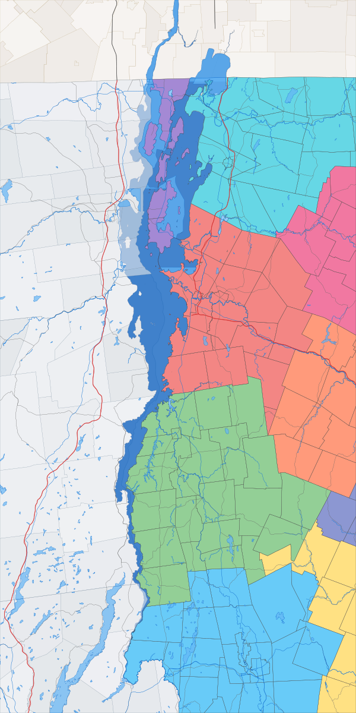

Upon the Construction of Maps in this Wondrous Age
A discourse by Abraham Ortelius, Geographer to His Majesty Philip II, having discovered most curious instruments and methods in the year of our Lord 2024

I confess that when first I beheld this miraculous device—a luminous tablet bearing the inscription "MacBook Pro"—I believed myself transported to some realm of sorcery. Yet upon careful examination of the manuscripts contained within (stored in chambers called "directories"), I have come to understand that the art of cartography has advanced beyond my wildest imaginings, whilst retaining principles most familiar to my own practice.
In my workshop at Antwerp, we copper-plate engravers laboured for months upon a single map, cutting each river and boundary by hand, layering colours through successive pressings. The gentleman whose workshop I now inhabit has achieved something remarkably similar, yet his "layers" exist not as physical plates but as ethereal constructions of pure geometry, stacked one atop another like transparent vellum sheets.
Most extraordinary is the manner of water representation! In my Theatrum Orbis Terrarum, we struggled mightily with the depiction of lakes and their islands. Here I find a technique called "water cutouts"—wherein the boundaries of townships are carved away where water lies, permitting the lake beneath to shine through. It is as if one were to cut windows in a map so that another map below might be visible. Genius! The Champlain Islands thus appear as holes in the municipal fabric, through which the cerulean waters gleam.
The Sandwich of Layers: From Foundation to Crown
As a copper-plate engraver builds impressions through successive pressings, so too does this digital cartographer construct maps through ordered layers. Each stratum serves its purpose, from the foundational backgrounds to the highways that crown the composition.
The technique of "simplification" particularly fascinates me. In my era, a cartographer must decide at the outset how much detail to include—once the copper is cut, the decision is permanent. Here, a mathematical sorcery called "Douglas-Peucker" permits the same map to exist at multiple levels of detail simultaneously. The "ultra fine" rendering preserves 236,000 vertices for the mechanical plotter's precision, whilst the "medium" version reduces to 90,000 for swifter contemplation. Three maps from one set of data!

I observe that this cartographer has gathered his source materials from many authorities—the "Census TIGER" provides boundaries and roads for the American states (a bureau of enumeration, I gather), whilst "CanVec" and "Quebec Open Data" furnish the northern territories. In my day, we relied upon sailors' reports, royal surveyors, and the correspondence of learned gentlemen. The principle remains: a map is only as true as its sources.
The waters present particular challenges. Lake Champlain—that great inland sea discovered by the French explorer whose name it bears—spans multiple jurisdictions. The Vermont portion comes from one source, the New York from another. These must be unified whilst preserving the thirty-one islands of Grand Isle County. The solution? A "lake with island cutouts"—the lake is rendered as a great blue field, then the islands are carved away as negative space, allowing whatever lies beneath to show through.
Most remarkable is the final output: not a printed page but a file of pure instruction, which directs a mechanical arm bearing a pen to trace every line upon paper. They call this "SVG"—Scalable Vector Graphics—and it preserves geometry at any magnification. My copper plates, once cut, serve for one size only. These digital masters serve all sizes equally well.
I have examined the full inventory: 116 separate datasets, each serving its purpose. Forty-two cover Vermont's hydrology alone—rivers and lakes for each of the fourteen counties, plus unified compilations. Fifteen datasets describe the highway network. Twenty-two define boundaries. Eighteen map the major water bodies. It is a Theatrum for the modern age.
Were I to return to my workshop in Antwerp with knowledge of these methods, I wonder—would my colleagues believe me? Or would they judge me mad, speaking of "layers" that exist without substance, "cutouts" that reveal what lies beneath, and maps that simplify themselves at the cartographer's command?
No matter. The craft endures. Whether by copper plate or luminous screen, we who make maps seek the same end: to render the world comprehensible, to guide the traveller, and to preserve for posterity an image of the lands as they were known in our time.
— Abraham Ortelius
Geographer, upon examining the Vermont Geodata Project
December, Anno Domini 2024